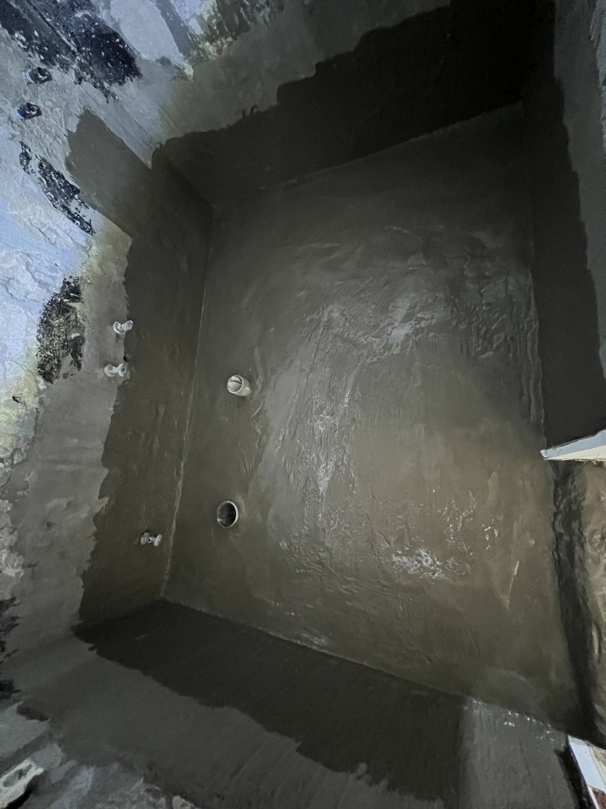

대전 열매마을 욕실 1차 방수｜바닥·벽 하단과 배관 주변

작업 핵심
현장 작업 한눈에 보기
- 현장
- 대전 열매마을 욕실
- 문제
- 타일 시공 전 1차 방수
- 작업
- 바닥·벽 하단·배관 주변 도포
- 결과
- 1차 방수 단계 기록
후속 타일·시험 결과는 미확인
대전 열매마을 욕실의 바닥·벽 하단·배관 주변 1차 방수 공정입니다. 타일 전 도포 상태를 소개하며 같은 현장의 확장부 단열·난방배관·미장은 별도 사례로 나눴습니다.
욕실 방수와 확장부 미장을 나누어 소개합니다
대전 열매마을에서 같은 날 진행한 작업 중 이 글은 욕실 1차 방수만 소개합니다. 거실·방 확장부 단열·난방배관·미장은 관련 사례로 따로 연결했습니다.
욕실 방수층과 확장부 미장면은 공간과 역할이 다릅니다. 각각의 사진을 다른 작업의 결과나 같은 공간의 전후로 섞지 않았습니다.
1. 욕실 바닥과 벽 하단 방수
상단 대표 사진이 욕실 1차 방수 모습입니다. 바닥에서 벽 하단으로 이어진 도포 범위와 배관 주변을 볼 수 있습니다.
타일을 붙인 완성 욕실이 아니라 그 아래에 가려질 방수 공정입니다.
타일 아래에 가려질 방수 공정입니다
대표 사진은 욕실 바닥에서 벽 하단·배관 주변으로 이어진 도포 상태입니다. 작업 범위를 남기는 사진이지 완성된 욕실 사진은 아닙니다.
제품 상세 규격·후속 도포·양생 일정·담수시험 결과는 이번 사진에서 확인되지 않습니다. 방수 범위와 타일 마감·확인 절차를 구분해 상담해 주세요.